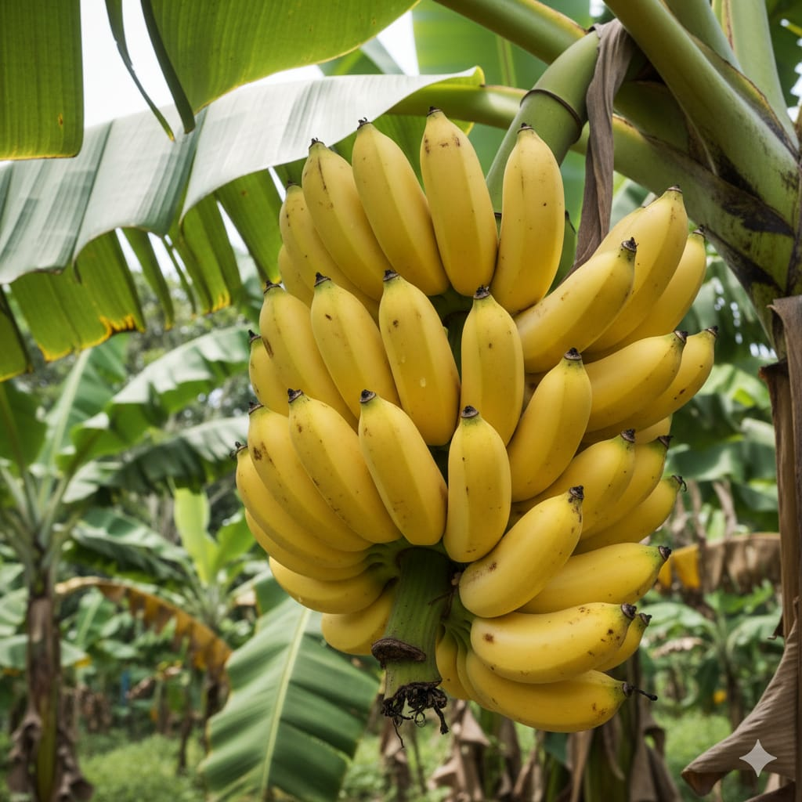

FarmWise
Home
Krishi Sahayi Bot
Crop Disease Diagnosis
Weather Prediction
Farmer Community
English
English
தமிழ் (Tamil)
മലയാളം (Malayalam)
Home
Krishi Sahayi Bot
Crop Disease Diagnosis
Weather Prediction
Farmer Community
Crop Disease Diagnosis
Search
Or Select a Crop
Tomato

Banana
Pepper
Rice